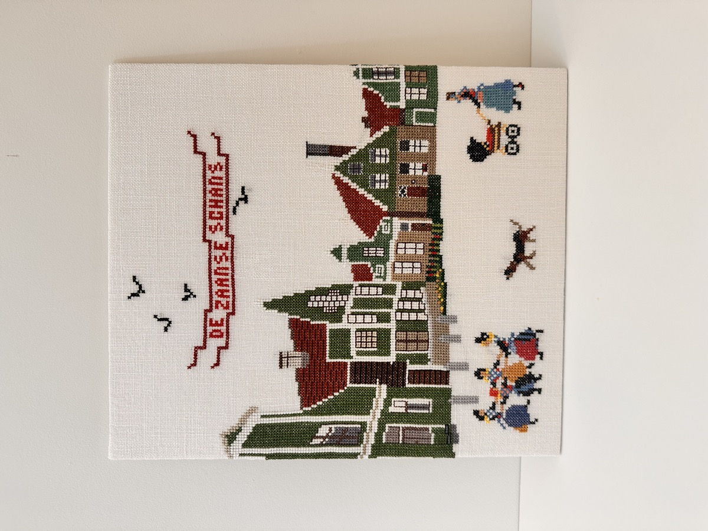

Zaanse Taferelen Zaan Scenes
Deze collectie toont het karakteristieke landschap en dagelijks leven van de Zaanstreek, met molens, dorpen en waterwegen als terugkerende elementen. De borduurwerken verbeelden een streek waar industrie, ambacht en wooncultuur nauw met elkaar verweven zijn. This collection shows the characteristic landscape and daily life of the Zaan region, with windmills, villages and waterways as recurring elements. The embroideries depict a region where industry, craft and living culture are closely intertwined.

ZS001

ZS002

ZS003

ZS006

ZS007
Wholesale Prijs
Wholesale Price
€475
Advies Retailprijs
Suggested Retail Price
€925 – €1.025
Minimum Order
Minimum Order
1 pakket
1 package
Lead Time
Binnen 1 week
Ships within 1 week
Includes
5 authentieke borduurwerken
5 authentic embroideries